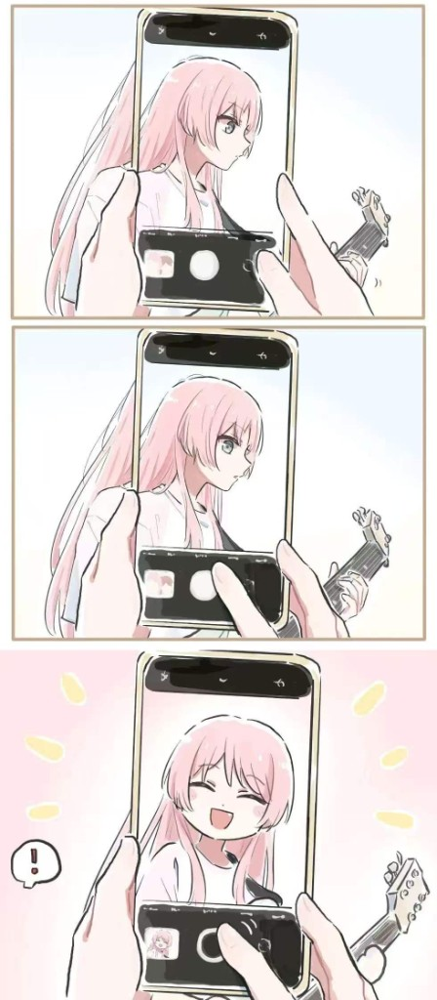

v0.3 - 千早爱音主题全站化
以 MyGO!!!!! 主唱粉与舞台灯光为灵感，统一品牌、英雄区与页脚，并增加舞台灯/拨片感装饰与免责声明。
千早爱音 · 台侧手记
记录灯效、界面与玩法的每次 Encore，像追 MyGO 的下一集一样追版本。

以 MyGO!!!!! 主唱粉与舞台灯光为灵感，统一品牌、英雄区与页脚，并增加舞台灯/拨片感装饰与免责声明。
支持上传封面和绑定游戏链接，点击卡片即可跳转游玩。
确定独立游戏小站结构：首页、游戏库、详情与页脚，粉色二次元分栏页底初版。